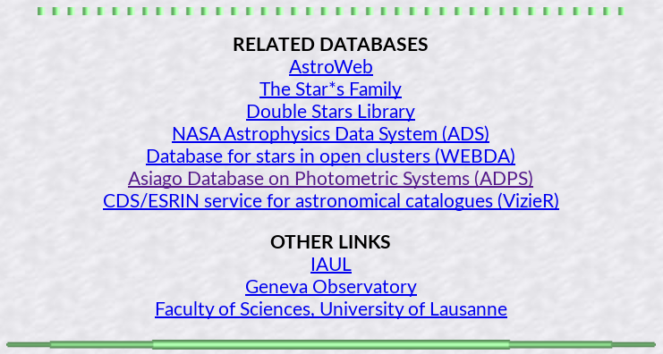

Фотометрические базы данных
index
- GCPD
- большая база фотометрических данных
-
А тут можно глянуть
звездные величины в полосах для конкретной звезды в конкретной системе.
-
Что-то говорили про
(RI)Cousins.
-
Отсюда можно попасть в остальные места, см картинку
.
- ADPS
- asiago database on photometric systems
- CDS
- всё что за пределами СС
-
Simbad -- база данных объектов
-
Vizier -- поиск по каталогам
-
Aladin -- интерактивный атлас звёздного наба
-
Sesame -- отождествитель имён
-
NED :: Nasa extragalactic gatabase (на него проще выйти с
CDS)
- AAVSO
- американская ассоциация наблюдателей переменных звезд. Тут можно построить кривую блеска.
- Webda
- скопления (рассеяные), лучше идти куда-то сюда